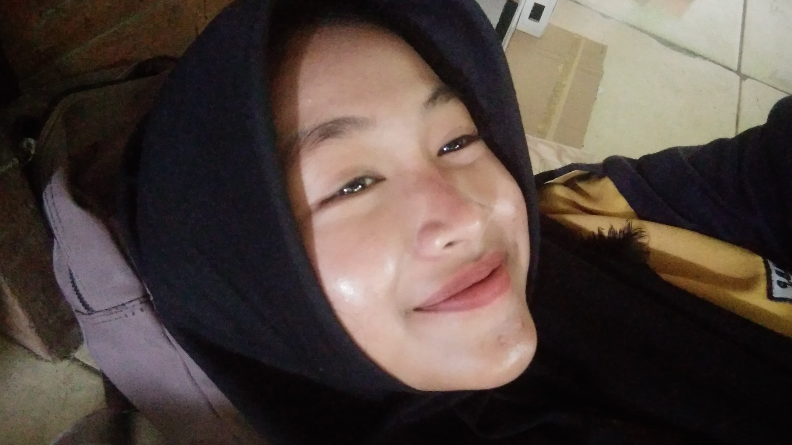
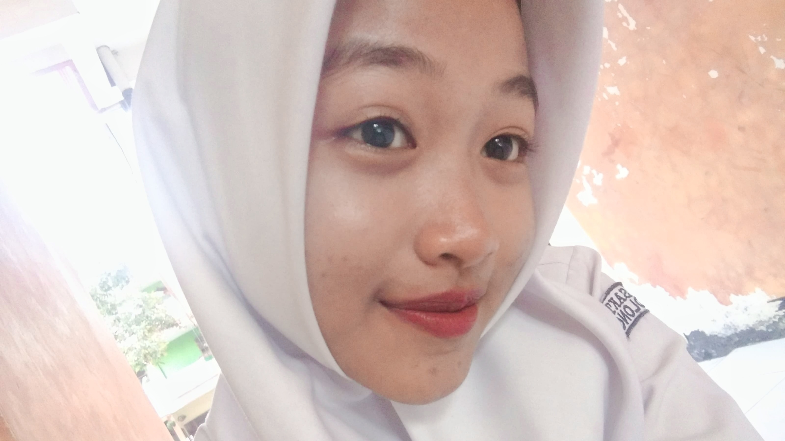
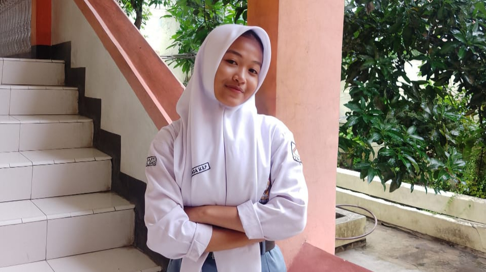
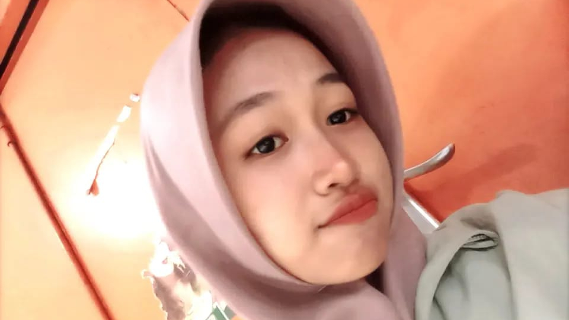
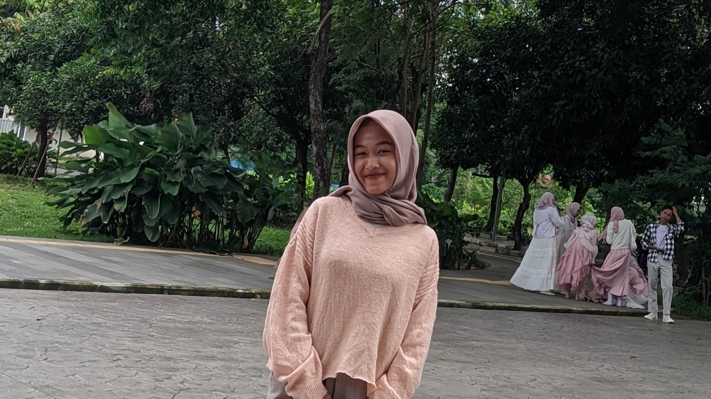
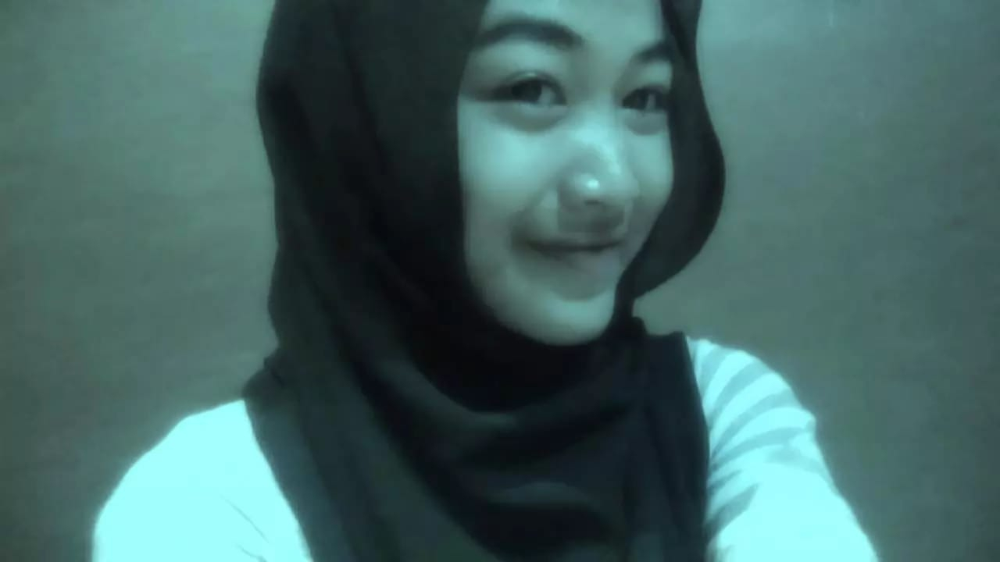
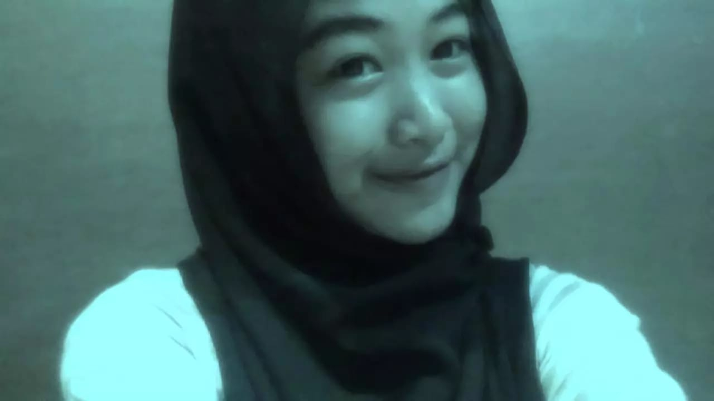

Selamat datang di Halaman Romantis untukmu, Sayang!
❤️
❤️
❤️
❤️
❤️
❤️
❤️
❤️
❤️
❤️

"Tresnaku marangmu tanpa wates."

"Saben detik karo kowe iku anugerah."

"Kowe iku ngimpi sing dadi nyata."

"Aku bakal tansah tresna marangmu."
"Nalika kita bebarengan, jagad iki kaya sampurna."

"Kowe iku kebahagiaan ing uripku."
"Saben langkah kita bebarengan iku petualangan."
"Kowe iku cahya ing uripku."

"Tresna kita iku crita sing endah."

"Salawasé mung kowe sing ana ing atiku."
Setiap detik yang kita lewati bersama adalah hadiah yang tak ternilai. Kamu adalah alasan aku tersenyum setiap hari, dan hatiku selalu berdebar setiap kali memikirkan masa depan bersama kamu. Cinta kita adalah kisah yang akan terus aku tulis dengan penuh kebahagiaan dan kebersamaan. Aku ingin selalu mendengarkan tawa indahmu dan menemani setiap langkahmu dalam hidup ini. Terima kasih sudah menjadi bagian terindah dalam hidupku, dan aku berjanji untuk selalu mencintaimu selamanya. Kamu adalah segalanya bagiku.
Aku mencintaimu lebih dari kata-kata yang bisa diungkapkan. Setiap saat bersamamu adalah anugerah yang tak terlukiskan. Ketika aku melihat matamu, aku melihat dunia yang penuh harapan dan kebahagiaan. Tidak ada yang lebih indah daripada saat kita berdua saling berbagi mimpi dan berjuang bersama. Aku ingin menghabiskan setiap hari denganmu, mendukungmu, dan mencintaimu lebih dalam dari sebelumnya.
Jika hidup ini adalah sebuah lagu, maka kamu adalah melodi yang selalu aku dengar dalam hati. Kamu adalah bagian dari setiap napasku, dan tanpa dirimu, rasanya hidup ini tak lengkap. Aku berjanji akan selalu setia menemanimu, menjadi teman terbaikmu, dan seseorang yang akan terus mencintaimu tanpa syarat.